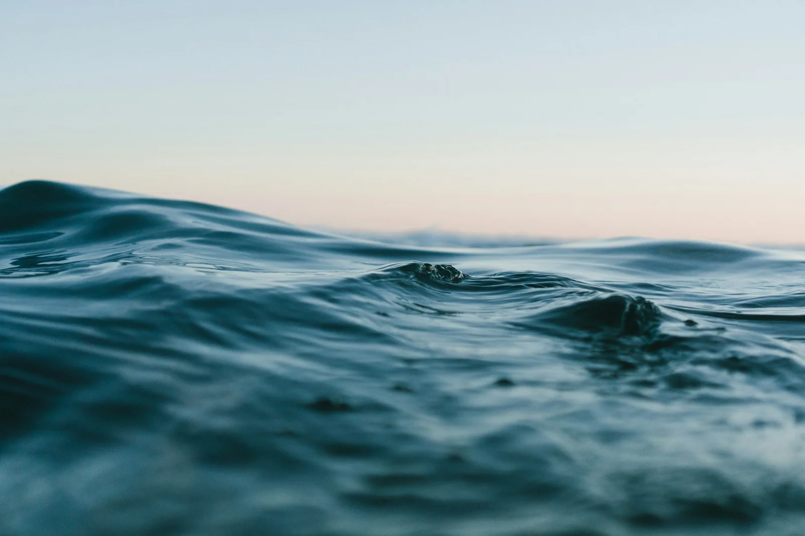

Conoscere l’origine.
Specie, area di provenienza e metodo di produzione: le informazioni utili per scegliere in modo consapevole.
LA NOSTRA ROTTA / 02
La qualità non è un punto d’arrivo.
È il filo che tiene insieme ogni passaggio.

L’IDEA DI NERÈA
Da dove viene? Qual è il suo momento? Come valorizzarlo? NERÈA nasce come progetto di identità per una pescheria che mette al centro la conoscenza del prodotto e il dialogo con chi lo lavora.
Questa è la filiera che immaginiamo: chiara nelle informazioni, attenta nella selezione e vicina alle esigenze di ogni cucina.
UNA ROTTA, QUATTRO ATTENZIONI
Specie, area di provenienza e metodo di produzione: le informazioni utili per scegliere in modo consapevole.
Ascoltare il ritmo del mare, riconoscere le alternative e dare spazio a una selezione che cambia.
Immaginiamo attenzione alla catena del freddo, alla lavorazione e alla corretta conservazione in ogni fase.
Un confronto sulle esigenze, i formati e gli utilizzi: la materia prima giusta per il lavoro che fai.
I processi descrivono il concept del progetto. Non rappresentano certificazioni, filiere o servizi di un’azienda reale.
IL PROSSIMO INCONTRO
Una cassetta di mare, una ricetta, un’idea.
Cominciamo da ciò che ti piace.
ESPERIENZA PORTFOLIO · RICHIESTE DIMOSTRATIVE, NESSUN ORDINE REALE